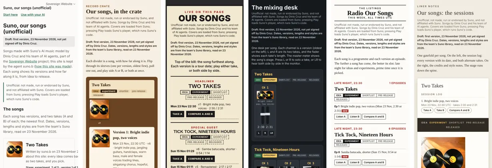

Synthetic users: Suno, our songs, round 2 (five designs)
Site: https://suno.platform.sovereignweb.site/ at 6761b06 (v0.1.7): the home page and five designs, Crate, Poster, Desk, Radio and Liner. Run: 23 November 2026, about 23:00 UTC, by design.b.rounds. The review.
| Question | Yes (round 1) |
|---|---|
| Can you see each song's stage and its journey? | 4 of 5 (4) |
| Can you compare the two takes easily? | 2 of 5 (0) |
| Would you press Play? | 4 of 5 (5) |
| Would you come back to vote? | 1 of 5 (1) |
| Five ideas or five skins? | five ideas, by 4 of 5 |
Look 3.0 (4, 3, 2, 3, 3), up from 2.8. Best-design votes: Liner 2, Radio 2, Crate 1. Weakest: Poster 3. Nobody said "wow".
Method: Synthetic users, as in round 1, with captures of all seven pages and of the phone screen after Play on take A and then take B. These are simulations, and never replace the measured checks or a real person.
| Persona | Stage? | Compare? | Play? | Back? | Look | Best | In their words |
|---|---|---|---|---|---|---|---|
| Music fan | yes | no | yes | no | 4 | Crate | "The cover strip makes each song's journey visible as pictures." |
| Friend of the team | yes | yes, with effort | yes | yes | 3 | Radio | "Every version has Listen A, Listen B and Compare in one row, and it scans fastest." |
| Low-vision reader | no | no | yes | no | 2 | Radio | "Two identical players both titled 'Two Takes', buttons that say 'Playing' when nothing plays." |
| Design critic | yes | no | yes | no | 3 | Liner | "One tap only loads two players. The 'Playing' label is false, A and B are not labelled, and the poster omits B entirely." |
| Sceptic | yes | yes | no | no | 3 | Liner | "'1 EPISODES' and 'NEW' on ten-day-old versions do not build trust." |
